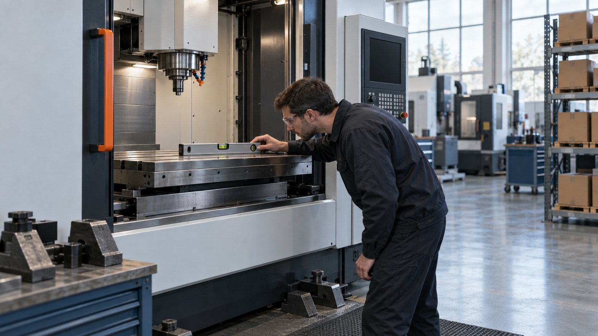

Почему эти вопросы задают до подписания договора
Договор фиксирует не обещания, прозвучавшие на переговорах, а условия, которые стороны внесли в текст договора и приложения к нему. Срок гарантии, порядок подачи сервисной заявки, норматив реакции, состав пусконаладки, обучение операторов — всё это лучше согласовать до поставки оборудования.
Пока коммерческие условия ещё обсуждаются, внести нужные пункты значительно проще. После поставки изменить их будет сложнее.
Практичный вариант — свести всё на один лист: слева вопросы, справа ответы каждого поставщика. Три предложения по 12 одинаковым критериям сравнить проще, чем три коммерческих предложения на десятках страниц.
Таблица на три поставщика: пусконаладка, гарантия, сервис, запчасти, итоговое сравнение и красные флаги. Распечатайте и заполняйте прямо на встрече.
Скачать чек-лист (PDF, 5 страниц)Пусконаладка и монтаж
1. Что конкретно входит в пусконаладку?
Попросите перечень работ письменно. Состав ПНР зависит от типа и комплектации станка, но обычно включает:
- распаковку и расконсервацию
- снятие транспортировочных креплений
- установку оборудования на штатные опоры
- подключение систем и периферийного оборудования
- проверку систем смазки и рабочих жидкостей
- выставление станка по уровню
- контроль геометрической точности в объёме, предусмотренном производителем
- проверку работы основных узлов
- тестовый запуск
- проверку работы без нагрузки и под нагрузкой
Если в коммерческом предложении указано одно слово — «пусконаладка», — попросите расшифровать, какие именно работы входят в стоимость.

Выставление станка по уровню — одна из работ, которые должны быть перечислены в составе ПНРФормулировка «ПНР включено» без перечня работ не позволяет сравнить предложения: у разных поставщиков в неё входит разный объём.
2. Кто выполняет установку: поставщик или персонал заказчика?
Уточните, идёт речь о полном монтаже или о шеф-монтаже. При монтаже основные работы выполняет поставщик. При шеф-монтаже монтаж выполняет персонал заказчика под контролем специалиста поставщика. Это разные форматы работ, разные зоны ответственности и обычно разная стоимость.
Если предусмотрен шеф-монтаж, заранее уточните:
- сколько сотрудников заказчика потребуется
- какая грузоподъёмная техника нужна
- кто отвечает за подключение электрики, воздуха, СОЖ и других систем
- что должно быть готово к приезду инженера
3. Что входит в обучение операторов?
Фраза «обучение включено» сама по себе мало что говорит. Уточните:
- сколько дней длится обучение
- сколько сотрудников можно обучить
- проводится ли обучение непосредственно на поставленном станке
- входит ли работа со стойкой ЧПУ
- разбирается ли создание и корректировка программы
- выполняется ли обработка тестовой или реальной детали заказчика
Если сроки и количество участников принципиальны, эти условия лучше зафиксировать в договоре.
Гарантия
4. Какой срок гарантии и с какой даты он начинается?
Гарантия может считаться от даты отгрузки, от даты поставки, от подписания акта пусконаладки или от ввода оборудования в эксплуатацию. Разница между этими датами иногда составляет несколько месяцев.
Важен не только срок «12 месяцев», но и точная точка отсчёта. Она должна быть указана в договоре однозначно, без формулировок вида «с момента передачи оборудования».
5. Что именно покрывает гарантия?
Уточните условия не только на станок в целом, но и на основные узлы: шпиндель, сервоприводы, систему ЧПУ, направляющие, ШВП, электрооборудование, гидравлику и пневматику, дополнительное оснащение. У разных производителей условия по отдельным компонентам могут отличаться.
Также важно понять:
- кто принимает гарантийную заявку
- кто принимает решение о гарантийном случае
- кто оплачивает выезд специалиста
- кто оплачивает доставку запчастей
6. Какие случаи не признаются гарантийными?
Лучше задать вопрос именно так и попросить письменный перечень оснований для отказа в гарантийном ремонте. Например:
- несоблюдение требований по электропитанию
- использование неподходящей СОЖ
- нарушение регламента технического обслуживания
- самостоятельный ремонт
- вмешательство в параметры ЧПУ
- эксплуатация оборудования вне допустимых режимов
Чем конкретнее эти условия сформулированы до покупки, тем меньше спорных ситуаций после запуска оборудования.
Выезд инженера и сервис
7. За какой срок сервис реагирует на заявку и за какой срок инженер приезжает?
Это два разных показателя. Реакцией может считаться регистрация заявки, звонок инженера или удалённая диагностика. Выезд — фактическое прибытие специалиста на предприятие. Поэтому лучше задавать два отдельных вопроса:
Через сколько времени после заявки со мной свяжется инженер?
За какой срок специалист сможет приехать на предприятие, если проблему нельзя решить удалённо?
Формулировки «быстро», «оперативно», «по возможности» ничего не гарантируют. Если скорость сервиса критична для производства, норматив желательно зафиксировать в договоре.
8. Где находится сервисная служба и сколько в ней инженеров?
Важно понимать не только адрес поставщика, но и реальную структуру сервиса. Спросите:
- где находится ближайший инженер
- сколько сервисных специалистов работает в вашем регионе
- какие типы оборудования они обслуживают
- кто принимает заявки
- работает ли удалённая диагностика
- как обрабатываются обращения вечером и в выходные
Один специалист, обслуживающий несколько регионов, потенциально означает очередь при одновременных обращениях.
9. Сколько стоит сервис после окончания гарантии?
Заранее запросите стоимость выезда инженера, часа или дня работы специалиста, командировочных расходов, удалённой диагностики и планового технического обслуживания.
По плановому ТО дополнительно стоит уточнить периодичность, перечень проверок, какие расходные материалы входят в стоимость и выдаётся ли отчёт по результатам обслуживания. Для станков с ЧПУ обычно проверяются системы безопасности, геометрия, гидравлика, пневматика, смазка, охлаждение, шпиндель, ЧПУ и электрошкаф.
Запчасти
10. Какие запчасти по этой модели есть на складе в России сейчас?
Не спрашивайте только «склад запчастей есть?» — попросите конкретный перечень. Хороший признак, если поставщик держит в наличии наиболее востребованные расходные и отказные позиции:
- приводные ремни
- датчики и концевые выключатели
- батареи систем ЧПУ
- реле и автоматы
- фильтры
- элементы систем смазки
- масляные насосы
- типовые электрические компоненты
Крупные дорогостоящие узлы — шпиндели, сервоприводы, ШВП, револьверные головы — обычно не держат на складе для каждой модели. По ним важнее знать реальный срок поставки и возможный сценарий ремонта.
11. За какой срок приходит запчасть, которой нет на складе?
Срок «7 дней» сам по себе ничего не говорит. Уточните, где находится запчасть, есть ли она на складе производителя, каким транспортом доставляется, входит ли в указанный срок международная логистика и учитывается ли таможенное оформление.
Лучше получить диапазон сроков отдельно для складской позиции, позиции со склада производителя и детали, которая изготавливается под заказ.
12. Насколько станок зависит от уникальных комплектующих?
Уточните производителей ключевых компонентов: системы ЧПУ, сервоприводов, датчиков, линейных направляющих, ШВП, элементов гидравлики и пневматики. Чем больше в конструкции распространённых серийных компонентов, тем меньше зависимость от одного канала поставки.
Но возможность установки аналога всё равно необходимо проверять технически. Особенно это важно во время гарантийного периода: самовольная замена компонента может повлиять на гарантийные обязательства.
Проверка поставщика за один звонок
Попросите организовать разговор с заказчиком, у которого похожий станок эксплуатируется хотя бы год-два. Новый станок редко показывает все особенности эксплуатации в первые недели. Через год-два уже понятнее, какие обращения возникали, сколько времени оборудование реально простаивало, насколько быстро приезжал сервис, какие запчасти приходилось ждать и как поставщик вёл себя в спорных гарантийных ситуациях.
Задайте заказчику три вопроса:
- Сколько времени прошло от сервисной заявки до приезда инженера?
- Какие запчасти приходилось ждать и сколько?
- Чем закончился последний гарантийный случай?
Если поставщик не может передать прямой контакт из-за конфиденциальности, попросите организовать референс-звонок с согласия клиента или предоставить обезличенный кейс внедрения.
Как сервис превращается в деньги
Для быстрой оценки можно посчитать стоимость потерянного производственного времени:
потерянные производственные часы × экономическая стоимость часа работы оборудования.
Дополнительно у критичного оборудования могут возникать:
- простой следующей операции
- перенос сроков изготовления
- сверхурочная работа после ремонта
- необходимость размещать заказ на стороне
- штрафы за задержку поставки продукции
Поэтому разница между станками в несколько процентов от цены оборудования иногда оказывается значительно меньше стоимости одной серьёзной остановки производства.
Как на эти вопросы отвечает Механит
Мы считаем, что эти вопросы нужно задавать любому поставщику оборудования, включая Механит.
Гарантия
Стандартный гарантийный срок на поставляемое оборудование — от 12 месяцев. Конкретный срок, дата начала гарантии и условия обслуживания фиксируются в договоре поставки с учётом требований производителя.
Сервис
По Нижнему Новгороду и области инженер обычно может выехать на площадку в течение 1–2 рабочих дней. Отдельно в договоре фиксируется норматив реакции на сервисное обращение — 2–3 рабочих дня. По другим регионам срок зависит от местонахождения предприятия, характера неисправности и необходимого объёма работ.
Пусконаладка
Состав ПНР определяется конкретной моделью оборудования. В стандартный объём могут входить расконсервация, снятие транспортировочных креплений, установка оборудования, подключение систем, выставление уровня, проверка геометрической точности по протоколу производителя, проверка работы основных узлов и тестовый запуск.
Стандартный инструктаж операторов занимает один рабочий день. Количество участников и расширенный объём обучения можно отдельно зафиксировать в договоре.
Запчасти
В Нижнем Новгороде работает склад сервисных запчастей. В наличии поддерживаются востребованные позиции, в том числе приводные ремни, концевые выключатели, батареи ЧПУ, автоматы и реле электрошкафов, масляные насосы и воздушные фильтры. Около четверти сервисных обращений удаётся закрывать запчастями со склада. По позициям, которых нет в наличии, срок поставки определяется отдельно в зависимости от производителя и логистики.
Плановое техническое обслуживание
Рекомендуем проводить плановое ТО не реже одного раза в год с учётом нагрузки и требований производителя. Проверка включает около 30 пунктов по 12 направлениям: безопасность, геометрия, гидравлика, осмотр механических узлов, пневматика, система охлаждения, смазка, измерение и смена инструмента, СОЖ, ЧПУ, шпиндель, электрошкаф.
Эти же 12 вопросов можно задать любому поставщику станков. В том числе — Механиту. Если после этого нужно сравнить несколько предложений, проверить техническую часть договора или понять, какие сервисные условия действительно важны для конкретного производства, мы разбираем это вместе с заказчиком при подборе оборудования.